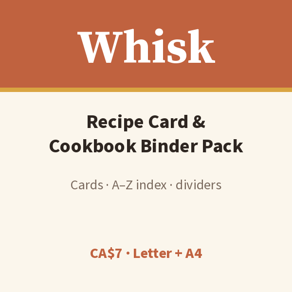

Free printable recipe card
Every family recipe, written down and easy to find.

One full-page card: recipe, category, serves / prep / cook / oven, source, rating, ingredients, numbered method and notes.
Download free PDFWhat’s in the full pack
- Full-page, family-heirloom and half-page 5×7 cut cards
- Recipe index A–Z (2 pages)
- 6 tabbed dividers: breakfast, lunch, dinner, sides, dessert, drinks
- Shopping-from-recipes list · spice inventory (32 spices + blanks)
- Kitchen conversions · blank master card
- US Letter and A4 PDFs · personal household use
Print tips
Print the index and dividers first, hole-punch, and load a 1" binder. Cardstock works well for half-page cards.